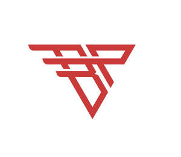

Trade Mark Journal No.2025/034 22 August 2025
UK00004245847 7 August 2025 (18,25,28)

- Class 18
- Leather and imitations of leather; animal skins, hides; trunks and travelling bags; handbags, rucksacks, purses; umbrellas, parasols and walking sticks; whips, harness and saddlery; clothing for animals; bags; sports bags; athletic bags; messenger bags; tote bags; wristlet bags; daypacks; golf umbrellas; hiking bags; shoe bags for travel; toiletry kits, sold empty; travel bags; duffel bags; backpacks; sack pacs; reservoir backpacks; holdalls; parts, fittings and accessories for all the aforesaid goods.
- Class 25
- Clothing, footwear, headgear; sports clothing, footwear and headgear; athletic clothing, footwear and headgear; clothing, footwear and headgear for football, rugby, golf, running, cricket, tennis, basketball, fitness, field hockey, ice hockey, training, handball, American football and baseball; tracksuits; gloves; mittens; hand-warmers; shirts; polo shirts; hats; sun hats; caps; bandanas; headbands; sweat bands; trousers; t-shirts; short-sleeved or long-sleeved t-shirts; short-sleeved shirts; sleeveless jerseys; undergarments; underwear; undergarment skins; boxer briefs; boxer shorts; briefs; brassieres; thongs; baselayer bottoms; baselayer tops; undershirts; unitards; vests; girdles; shorts; wristbands; socks; ankle socks; men's socks; men's dress socks; leggings; long sleeve shirts [turtle necks]; mock turtle necks; jerseys; tank tops; shoes; jackets; sweatshirts; sweat pants; pullovers; fleece pullovers; knitwear; capri trousers; hooded pullovers; hooded sweatshirts; knit shirts; long-sleeved shirts; coats; dresses; skirts; children's clothing, footwear and headwear; sports bras; sports jackets; sports jerseys; sports trousers; jogging trousers; sports shirts; baseball shoes; baseball caps; baseball uniforms; basketball sneakers; swimwear; beachwear; bikinis; beach footwear; bib overalls; camouflage gloves; camouflage jackets; camouflage trousers; camouflage shirts; camouflage vests; hunting jackets; hunting trousers; bib overalls for hunting; hunting shirts; hunting vests; cleats for attachment to sports shoes; fishing shirts; sports shoes; sneakers; training shoes; running shoes; football shoes; soccer boots; golf shorts; golf shirts; golf caps; golf trousers; martial arts uniforms; mixed martial arts suits; volleyball jerseys; yoga trousers; yoga shirts; athletic uniforms; foul weather gear; rainwear; moisture-wicking sports bras; moisture-wicking sports trousers; moisture-wicking sports shirts; rain suits; rain jackets; rain trousers; rainproof jackets; waterproof jackets and pants; waterproof trousers; windproof trousers; wind resistant jackets; windproof shirts; splash tops; ski bibs; ski gloves; ski jackets; ski pants; ski trousers; ski wear; snow trousers; skorts; snowboard gloves; snowboard mittens; snowboard pants; snowboard trousers; tennis wear; visors; padded shirts; padded trousers; padded shorts; padded elbow compression sleeves; belts; parts, fittings and accessories for all the aforesaid goods.
- Class 28
- Boxing gloves; Gloves (Boxing -); Batting gloves; Fencing gloves; Karate gloves; Football gloves; Softball gloves; Hockey gloves; Gloves (Fencing -); Gloves (Golf -); Swimming gloves; Handball gloves; Sparring gloves; Lacrosse gloves; Windsurfing gloves; Bowling gloves; Baseball gloves; Gloves (Baseball -); Golf gloves; Golfing gloves; Billiard gloves; Racquet ball gloves; Gloves for golf; Water-skiing gloves; Gloves for sports; Gloves for games; Weight lifting gloves; Gauntlets [gloves for archery]; Gloves for water-skiing; Webbed gloves for swimming; Gloves for American football; Batting gloves [accessories for games]; Gloves made specifically for use in playing sports; Gym balls; Baby gyms; Gym balls for yoga; Jungle gyms [play equipment]; Gym chalk for improving hand grip in sports activities; Wrist straps for weightlifting ; Wrist weights for exercise; Wrist guards for athletic use; Wrist and ankle weights for exercise; Athletic protective wrist pads for cycling; Athletic protective wrist pads for skateboarding; Ankle and wrist weights for exercise; Athletic protective wrist pads for skating; Exercise weights; Fishing weights; Weight lifting belts; Weight lifting benches; Leg weights for exercising; Barbells for weight lifting; Tungsten weights for fishing; Leg weights [sports articles]; Dumbbells for weight lifting; Leg weights for athletic use; Belts (Weight lifting -) [sports articles]; Dumb-bells [for weight lifting]; Bar-bells [for weight lifting]; Leg weights for sports training; Lifting grips for weight lifting; Dumbbell shafts for weight lifting; Weight lifting belts [sports articles]; Weight lifting machines for exercise; Dumb-bell shafts [for weight lifting]; Tapes with weights for balancing tennis racquets; Machines incorporating weights for use in physical exercise. Games and playthings; playing cards; gymnastic and sporting articles; decorations for Christmas trees; childrens' toy bicycles; sporting equipment; sporting articles and equipment for football, rugby, golf, running, cricket, tennis, basketball, fitness, field hockey, ice hockey, training, handball, American football and baseball; bags adapted for sporting articles and sporting equipment; baseball bat bags; field hockey stick bags; golf bags; lacrosse stick bags; softball bat bags; golf clubs; sports rackets; sports gloves; field hockey gloves; goalkeepers' gloves; golf gloves; batting gloves; football gloves; lacrosse gloves; running gloves; weight lifting gloves; sports balls; training balls; cricket pads; leg and arm guards for sport; protective padded articles for use in sport; apparatus for use in training in sport [sporting equipment]; mouth guards for athletic use; cases for holding mouth guards; lip guards for sport; chin pads for athletic use; football girdles; protective athletic cups; jock straps; baseball and softball equipment for catchers, namely, head gear, face masks, chest protectors, leg guards, knee supports; toys; parts, fittings and accessories for all the aforesaid goods.
Inavate Global FZCO
Representative: Haris Isaac